No capítulo anterior, aprendemos sobre saturação e a importância de identificá-la e removê-la de nossas apresentações. Enquanto trabalhamos para eliminar as distrações, também queremos examinar o que resta e considerar como queremos que nosso público interaja com nossas comunicações visuais.
Neste capítulo, examinamos melhor como as pessoas veem e como você tira proveito disso ao produzir visuais. Vamos falar brevemente sobre visão e memória para destacar a importância de ferramentas poderosas: os atributos pré-atentivos. Vamos explorar como os atributos pré-atentivos, como tamanho, cor e posição na página, podem ser usados estrategicamente de duas maneiras. Primeiro, eles podem ser usados para ajudar a direcionar a atenção do público para onde você deseja que ele se concentre. Segundo, podem ser usados para criar uma hierarquia visual de elementos, para conduzir seu público pelas informações que você deseja comunicar, do modo como quer que as processem.
Entendendo como nosso público vê e processa informação, nos posicionamos melhor para nos comunicarmos eficientemente.
Você vê com seu cérebro
Vamos ver uma imagem simplificada de como as pessoas veem, ilustrada na Figura 4.1. O processo é mais ou menos assim: a luz reflete a partir de um estímulo. Isso é capturado por nossos olhos. Não vemos totalmente com nossos olhos; acontece um processamento aqui, mas é principalmente o que acontece em nosso cérebro que consideramos percepção visual.
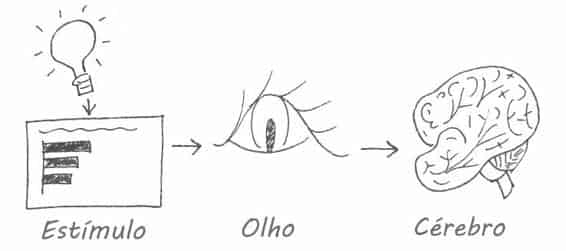
FIGURA 4.1 UMA IMAGEM SIMPLIFICADA DE COMO VOCÊ VÊ
Dentro do cérebro existem três tipos de memória, importantes ao projetarmos comunicações visuais: memória icônica, memória de curto prazo e memória de longo prazo. Cada tipo desempenha um papel importante e distinto. A seguir estão explicações básicas de processos altamente complexos, abordados simplesmente para preparar o terreno para o que você precisa conhecer ao projetar comunicações visuais.
A memória icônica é super rápida. Ela atua sem que você a perceba conscientemente e é acionada quando olhamos o mundo ao nosso redor. Por quê? Há muito tempo, na cadeia evolutiva, os predadores ajudaram nossos cérebros a desenvolver maneiras que permitiram maior eficiência de visão e velocidade de resposta. Em particular, a capacidade de assimilar diferenças em nosso ambiente rapidamente — por exemplo, o movimento de um predador à distância — se tornou arraigada em nosso processo visual. Eram mecanismos de sobrevivência; hoje, eles podem ser aproveitados para uma comunicação visual eficaz.
A informação permanece em sua memória icônica por uma fração de segundo antes de ser encaminhada para sua memória de curto prazo. O importante a saber sobre a memória icônica é que ela está associada a um conjunto de atributos pré-atentivos. Os atributos pré-atentivos são itens fundamentais em seu cinto de utilidades de design visual; portanto, voltaremos a eles em breve.
Antes, vamos continuar nossa discussão sobre memória.
A memória de curto prazo tem limitações. Especificamente, em dado momento, as pessoas podem manter nela cerca de quatro grupos de informações visuais. Isso significa que, se criamos um gráfico com dez séries de dados diferentes, com dez cores diferentes, dez formas diferentes de marcadores de dados e uma legenda ao lado, estamos fazendo nosso público trabalhar duro para ir e voltar entre a legenda e os dados para decifrar o que está olhando. Como já discutimos, tanto quanto possível, queremos limitar esse tipo de peso cognitivo para nosso público. Não queremos fazê-lo trabalhar para entender a informação, pois assim corremos o risco de perder sua atenção. Daí, perdemos nossa capacidade de comunicação.
Nessa situação específica, uma solução é legendar as várias séries de dados diretamente (reduzindo o trabalho de ir e vir entre a legenda e os dados, aproveitando o princípio da proximidade da Gestalt, abordado no Capítulo 3).
De um modo geral, queremos formar grupos de informações maiores e coerentes, para podermos encaixá-las no espaço finito da memória operacional de nosso público.
Quando algo sai da memória de curto prazo, vai para o esquecimento e provavelmente se perde para sempre ou passa para a memória de longo prazo.
A memória de longo prazo dura por toda a vida e é fundamentalmente importante para o reconhecimento de padrões e para o processamento cognitivo geral. É a mistura de memória visual e verbal, as quais agem de formas diferentes. A memória verbal é acessada por uma rede neural, na qual o caminho se torna importante para a capacidade de reconhecer ou lembrar. A memória visual, por outro lado, funciona com estruturas especializadas.
Existem aspectos da memória de longo prazo que queremos usar para fixar nossa mensagem em nosso público. De particular importância para nossa conversa é o fato de que imagens podem nos ajudar a lembrar mais rapidamente das coisas armazenadas em nossa memória verbal de longo prazo. Por exemplo, se você vir uma fotografia da Torre Eiffel, uma inundação de conceitos conhecidos, sentimentos a respeito ou experiências tidas em Paris podem ser despertados. Combinando a memória visual e verbal, nos preparamos para o sucesso quando se trata de despertar a formação de memórias de longo prazo em nosso público. Vamos discutir algumas táticas específicas para isso no Capítulo 7, no contexto do storytelling.
Na seção anterior, apresentei a memória icônica e mencionei que ela está associada a atributos pré-atentivos. A melhor maneira de provar o poder dos atributos pré-atentivos é demonstrando-os. A Figura 4.2 mostra um bloco de números. Prestando atenção a como você processa a informação e quanto tempo demora, conte rapidamente quantos números 3 aparecem na sequência.
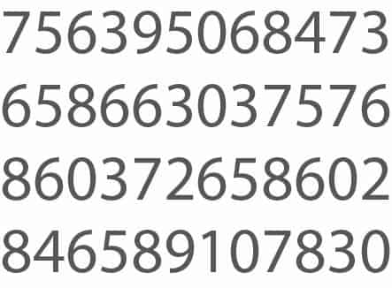
FIGURA 4.2 EXEMPLO DE CONTAGEM DE NÚMEROS 3
A resposta correta é seis. Na Figura 4.2 não existem indícios visuais para ajudá-lo a chegar a essa conclusão. Isso contribui para um exercício desafiador, no qual você precisa percorrer as quatro linhas de texto, procurando o número 3 (um tipo de forma complicada).
Veja o que acontece quando fazemos uma única mudança no bloco de números. Repita o exercício de contagem de números 3, usando a Figura 4.3.
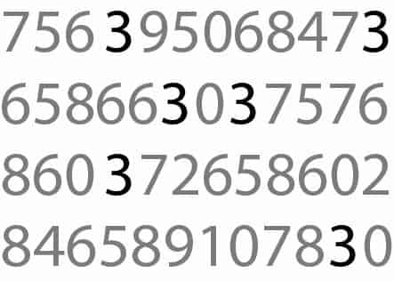
FIGURA 4.3 CONTAGEM DE NÚMEROS 3 COM ATRIBUTOS PRÉ-ATENTIVOS
Observe como o mesmo exercício é mais fácil e rápido com a Figura 4.3.
Você não tem tempo para piscar, não mesmo, e repentinamente existem seis números 3 à sua frente. Isso é aparentemente rápido assim porque, nessa segunda iteração, sua memória icônica está sendo usada. O atributo pré-atentivo da intensidade da cor, neste caso, faz com que os números 3 sejam a única coisa a se destacar perante o resto. Nosso cérebro é rápido em assimilar isso, sem que precisemos dedicar qualquer pensamento consciente.
Isso é notável e profundamente poderoso. Significa que, se usarmos os atributos pré-atentivos estrategicamente, eles poderão nos ajudar a permitir que nosso público veja o que queremos que ele veja, antes mesmo que saiba o que está vendo!
Note os vários atributos pré-atentivos que usei no texto anterior para sublinhar sua importância!
A Figura 4.4 mostra os vários atributos pré-atentivos.
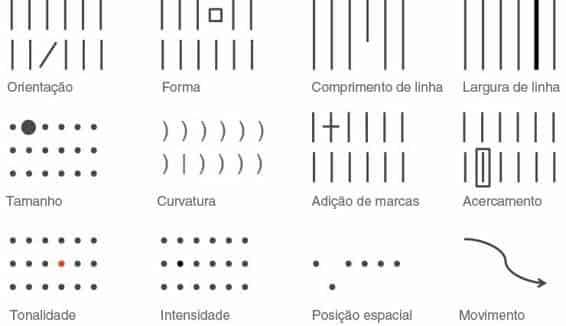
FIGURA 4.4 ATRIBUTOS PRÉ-ATENTIVOS
Fonte: Adaptado do livro Show Me the Numbers, sem tradução no Brasil, 2004, de Stephen Few.
Ao examinar os atributos na Figura 4.4, observe como seus olhos são atraídos para o elemento que é diferente do resto dentro de cada grupo: você não precisa procurá-lo. Isso acontece porque nosso cérebro é constituído de forma a perceber rapidamente as diferenças que vemos em nosso ambiente.
As pessoas tendem a associar valores quantitativos a alguns (mas não a todos) atributos pré-atentivos. Por exemplo, a maioria das pessoas considerará que uma linha longa representa um valor maior que uma linha curta. Esse é um dos motivos pelos quais os gráficos de barras são simples de ler. Mas não consideramos as cores da mesma maneira. Se eu perguntar qual é maior — vermelho ou azul? —, não será uma pergunta significativa. Isso é importante, porque nos diz quais dos atributos podem ser usados para codificar informação quantitativa (comprimento de linha, posição espacial ou, de modo mais limitado, largura de linha, tamanho e intensidade podem ser usados para refletir valores relativos) e quais devem ser usados como diferenciadores categóricos.
Quando usados moderadamente, os atributos pré-atentivos podem ser extremamente úteis para duas coisas: (1) chamar rapidamente a atenção de seu público para onde você quer que ele olhe e (2) criar uma hierarquia visual de informações. Vamos ver exemplos de cada um deles, primeiramente com texto e depois no contexto da visualização de dados.
Sem quaisquer indícios visuais, quando confrontados com um bloco de texto, nossa única opção é lê-lo. Mas atributos pré-atentivos empregados moderadamente podem mudar isso rapidamente. A Figura 4.5 mostra como você pode utilizar alguns dos atributos pré-atentivos apresentados anteriormente em seus textos. O primeiro bloco de texto não emprega nenhum atributo pré-atentivo. Isso o torna semelhante ao exemplo da contagem de números 3: você precisa lê-lo, colocar as lentes do que é importante ou interessante e, então, possivelmente lê-lo novamente para colocar as partes interessantes no contexto do resto.
Observe como aproveitar os atributos pré-atentivos muda o modo como você processa a informação. Cada um dos blocos de texto subsequentes emprega um atributo pré-atentivo. Note como, dentro de cada um, o atributo pré-atentivo chama sua atenção e como alguns atributos atraem seus olhos com mais ou menos força que outros (por exemplo, cor e tamanho chamam a atenção, enquanto o itálico obtém ênfase moderada).
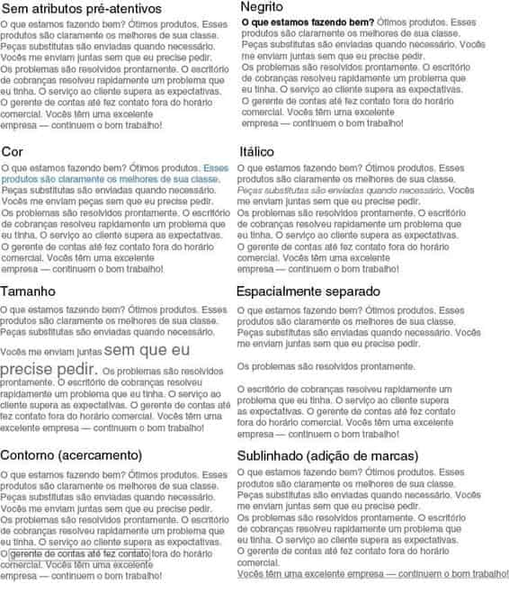
FIGURA 4.5 ATRIBUTOS PRÉ-ATENTIVOS EM TEXTO
Além de chamar a atenção de nosso público para onde desejamos que ele se concentre, podemos empregar atributos pré-atentivos para criar hierarquia visual em nossas comunicações. Como vimos na Figura 4.5, os vários atributos chamam nossa atenção com forças diferentes. Além disso, dentro de determinado atributo pré-atentivo existem variações que chamarão a atenção com mais ou menos intensidade. Por exemplo, com o atributo pré-atentivo da cor, um azul intenso normalmente chamará mais a atenção do que um azul apagado. Ambos chamarão mais a atenção do que um cinza claro. Podemos aproveitar essa variação e usar vários atributos pré-atentivos juntos, para possibilitar que nossos visuais sejam mapeados, enfatizando alguns componentes e retirando a ênfase de outros.
A Figura 4.6 ilustra como isso pode ser feito com o bloco de texto do exemplo anterior.
FIGURA 4.6 ATRIBUTOS PRÉ-ATENTIVOS PODEM AJUDAR A CRIAR UMA HIERARQUIA VISUAL DE INFORMAÇÕES.
Na Figura 4.6, atributos pré-atentivos foram usados para criar uma hierarquia visual de informações. Isso torna as informações que apresentamos mais fáceis de mapear. Estudos têm mostrado que temos de 3 a 8 segundos com nosso público, durante os quais ele decide se vai continuar a ver o que colocamos em sua frente ou direcionar sua atenção para outra coisa. Se usarmos os atributos pré-atentivos com sabedoria, mesmo que tenhamos apenas esses 3 a 8 segundos iniciais, teremos passado ao nosso público a essência do que queremos dizer.
Usar atributos pré-atentivos para criar uma hierarquia visual clara de informações passa instruções implícitas para seu público, indicando a ele como processar as informações. Podemos sinalizar o que é mais importante, no que prestar atenção primeiro, qual é o segundo item mais importante, no que deve prestar atenção em seguida e assim por diante. Podemos colocar os componentes necessários, mas que não afetam a mensagem, em segundo plano, para que não dividam a atenção. Isso facilita e agiliza o recebimento das informações que fornecemos pelo nosso público.
O exemplo anterior demonstrou o uso de atributos pré-atentivos em texto.
Esses atributos também são muito úteis para a comunicação eficaz de dados.
Sem outros indícios visuais, os gráficos podem se tornar muito parecidos com o exercício de contagem de números 3 ou com o bloco de texto considerado anteriormente. Veja o seguinte exemplo. Imagine que você trabalha em um fabricante de carros. Você quer entender e compartilhar ideias sobre as principais preocupações com o design (medidas como o número de preocupações por 1.000 preocupações) dos clientes para uma marca e modelo de um veículo específico. Seu visual inicial pode ser como o da Figura 4.7.
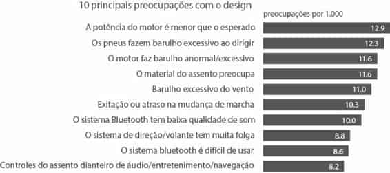
FIGURA 4.7 GRÁFICO ORIGINAL, SEM ATRIBUTOS PRÉ-ATENTIVOS
Note como, sem outros indícios visuais, você é obrigado a processar todas as informações. Sem indícios sobre o que é importante ou ao que se deve prestar atenção, é o exercício de contagem de números 3 outra vez.
Lembre-se da distinção que fizemos anteriormente, no Capítulo 1, entre análise exploratória e explanatória. O visual da Figura 4.7 poderia ter sido criado durante a fase exploratória: quando você está examinando os dados para saber o que pode ser interessante ou valer a pena comunicar a alguém. A Figura 4.7 nos mostra que existem 10 preocupações com o design com mais de oito preocupações por 1.000.
Quando se trata de análise explanatória e de usar esse visual para compartilhar informações com seu público (em vez de apenas mostrar dados), o uso cuidadoso de cor e texto é um modo de enfocarmos a história, como ilustrado na Figura 4.8.
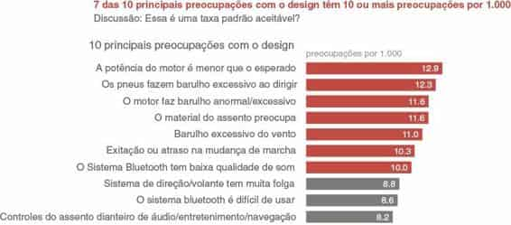
FIGURA 4.8 USE COR PARA CHAMAR A ATENÇÃO
Podemos ir um passo além, usando o mesmo visual, mas com enfoque e texto modificados para levar nosso público das partes macro para as partes micro da história, como demonstrado na Figura 4.9.
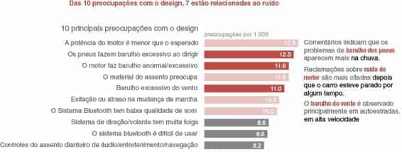
FIGURA 4.9 CRIE UMA HIERARQUIA VISUAL DE INFORMAÇÕES
Especialmente em ambientes de apresentação ao vivo, iterações repetidas do mesmo visual, com diferentes partes enfatizadas, para contar diferentes histórias ou diferentes aspectos da mesma história (como demonstrado nas Figuras 4.7, 4.8 e 4.9), podem ser uma estratégia eficaz. Isso permite que o público conheça seus dados e visual primeiro e, então, continue a aproveitá-los da maneira ilustrada. Note, nesse exemplo, como seus olhos são atraídos aos elementos do visual que você pretendia enfocar, graças ao uso estratégico de atributos pré-atentivos.
Um aviso sobre o uso de atributos pré-atentivos: quando você destaca um ponto em sua história, isso pode dificultar a visão de outros. Quando está fazendo análise exploratória, você deve evitar o uso de atributos pré-atentivos principalmente por esse motivo. Contudo, em uma análise explanatória, você deve ter uma história específica que está comunicando para seu público. Use atributos pré-atentivos para ajudar a tornar essa história visualmente clara.
O exemplo anterior usou principalmente cor para chamar a atenção do observador. Vamos ver outro cenário, usando um atributo pré-atentivo diferente. Lembre-se do exemplo apresentado no Capítulo 3: você gerencia uma equipe de TI e quer mostrar como o volume de tíquetes recebidos supera os recursos de sua equipe. Depois de limpar o gráfico, ficamos com a Figura 4.10.
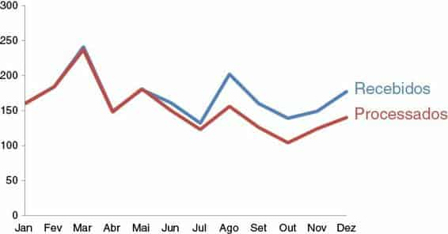
FIGURA 4.10 VAMOS REVER O EXEMPLO DOS TÍQUETES
No processo de determinar onde quero enfocar a atenção de meu público, uma estratégia que emprego frequentemente é começar colocando tudo em segundo plano. Isso me obriga a tomar decisões explícitas sobre o que trazer para a frente ou destacar. Vamos começar fazendo isso; veja a Figura 4.11.
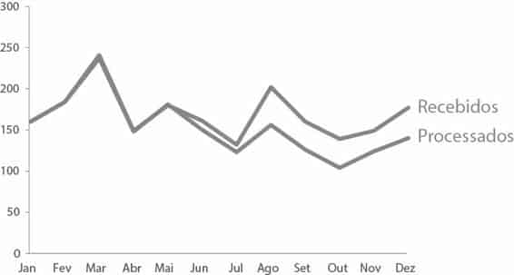
FIGURA 4.11 PRIMEIRO, COLOQUE TUDO EM SEGUNDO PLANO
Em seguida, quero destacar os dados. A Figura 4.12 mostra as duas séries de dados (Recebidos e Processados) mais escuras e mais altas do que as linhas e as legendas de eixo. Foi uma decisão intencional tornar a linha de Processados mais escura que a linha de Recebidos, a fim de enfatizar o fato de que o número de tíquetes sendo processados caiu em relação ao número que está sendo recebido.
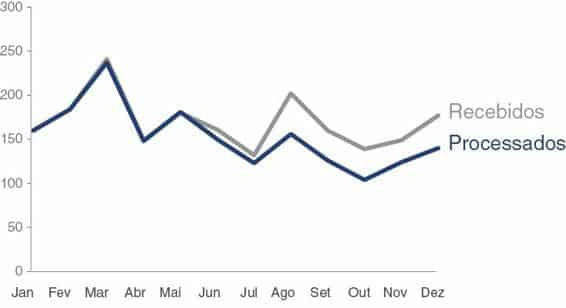
FIGURA 4.12 FAÇA OS DADOS SE DESTACAREM
Neste caso, queremos chamar a atenção do público para o lado direito do gráfico, onde a lacuna começou a se formar. Sem outros indícios visuais, nosso público normalmente começará na parte superior esquerda da imagem e fará um zigue-zague em forma de “z” com os olhos pela página.
Finalmente, o observador chegará à lacuna no lado direito, mas vamos considerar como podemos usar nossos atributos pré-atentivos para fazer isso acontecer mais rapidamente.
As marcas de pontos de dados adicionadas e as legendas numéricas representam um atributo pré-atentivo que podemos usar. Contudo, tenha paciência, pois demos um passo na direção errada antes de irmos para a correta. Veja a Figura 4.13.
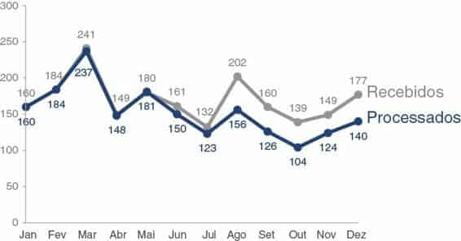
FIGURA 4.13 LEGENDAS DEMAIS PARECEM SATURADAS
Quando adicionamos marcadores de dados e legendas numéricas a cada ponto de dado, rapidamente criamos uma saturação. Mas veja o que acontece na Figura 4.14, quando somos estratégicos a respeito de quais marcadores e legendas preservamos e quais eliminamos.
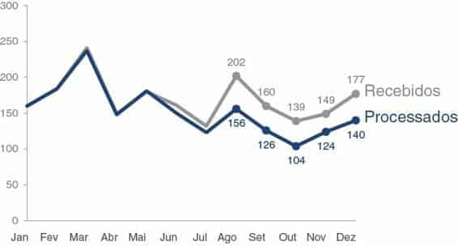
FIGURA 4.14 LEGENDAS USADAS MODERADAMENTE AJUDAM A CHAMAR A ATENÇÃO
Na Figura 4.14, as marcas adicionadas atuam como um sinal de “olhe pra cá”, chamando mais rapidamente a atenção de nosso público para o lado direito do gráfico. Eles proporcionam ao nosso público a vantagem adicional de permitir que faça um cálculo matemático rápido, caso queira saber quão grande o acúmulo está se tornando (se acharmos que isso é algo que definitivamente queremos fazer, devemos pensar em fazer para ele).
Esses são apenas dois exemplos de uso de atributos pré-atentivos para focalizar a atenção do público. No restante deste livro, vamos ver vários outros exemplos que aproveitam essa mesma estratégia geral de diferentes maneiras.
Existem alguns atributos pré-atentivos que são tão importantes do ponto de vista estratégico quando se trata de focalizar a atenção de seu público, que justificam suas próprias discussões: tamanho, cor e posição na página. Vamos tratar de cada um deles nas seções a seguir.
O tamanho importa. O tamanho relativo denota a importância relativa.
Lembre-se disso ao projetar suas comunicações visuais. Se você estiver mostrando várias coisas de importância aproximadamente igual, dimensione-as de modo semelhante. Como alternativa, se houver algo realmente importante, use o tamanho para indicar isso: torne GRANDE!
O seguinte é uma situação real, na qual o tamanho quase causou repercussões inesperadas.
No início de minha carreira na Google, estávamos projetando um painel para ajudar em um processo de tomada de decisão (estou sendo intencionalmente vaga para preservar a confidencialidade). Na fase de design havia três informações principais que queríamos incluir, somente uma das quais estava prontamente disponível (os outros dados tinham de ser obtidos). Nas versões iniciais do painel, a informação de que dispúnhamos ocupou provavelmente 60% do espaço disponível, com espaços reservados para as outras informações que estávamos coletando. Depois de obtermos os outros dados, os colocamos nos espaços existentes. Bem depois, percebemos que o tamanho dos dados iniciais que incluímos estava chamando atenção indevida se comparado com o resto das informações da página. Felizmente, identificamos isso antes que fosse tarde demais. Modificamos o layout de modo que as três coisas igualmente importantes tivessem o mesmo tamanho.
É interessante pensar que conversas completamente diferentes ocorreram e decisões foram tomadas como resultado dessa mudança no design.
Essa foi uma lição importante para mim (e vamos destacá-la na próxima seção, sobre cores): não permita que suas escolhas de design sejam casuais; em vez disso, elas devem ser o resultado de decisões explícitas.
Quando usada moderadamente, a cor é uma das ferramentas mais poderosas para chamar a atenção de seu público. Resista ao impulso de usar cor apenas para colorir; em vez disso, use cor seletivamente, como uma ferramenta estratégica para destacar as partes importantes de sua apresentação. O uso de cores sempre deve ser uma decisão intencional. Nunca deixe que sua ferramenta tome essa importante decisão para você!
Normalmente, eu projeto meus visuais em tons cinzas e escolho uma única cor forte para chamar a atenção para onde desejo. Minha cor básica é cinza, não preto, para permitir um maior contraste, pois as cores se destacam mais contra cinza do que contra preto. Para chamar a atenção, frequentemente uso azul, por vários motivos: (1) eu gosto, (2) evito problemas de daltonismo, que vamos discutir em breve, e (3) imprime bem em preto e branco. Dito isso, azul certamente não é sua única opção.
Quando se trata do uso de cor, existem várias lições a aprender: utilize moderadamente, use uniformemente, projete tendo em vista o daltonismo, leve em consideração o tom que a cor transmite e considere se usará cores de marca. Vamos discutir tudo isso em detalhes (e você vai ver muitos exemplos onde desvio de meu azul típico, por diversos motivos).
É fácil identificar um falcão em um céu cheio de pombos, mas à medida que a variedade de pássaros aumenta, torna-se cada vez mais difícil localizar o falcão. Lembra-se do provérbio de Colin Ware que discutimos no último capítulo sobre saturação? O mesmo princípio se aplica aqui. Para que a cor seja eficiente, ela deve ser usada com moderação. Variedade demais impede que algo se destaque. Há necessidade de contraste suficiente para fazer algo chamar a atenção de seu público.
Quando usamos cores demais juntas, além de entrarmos na terra do arco-íris, perdemos seu valor pré-atentivo. Por exemplo, uma vez encontrei uma tabela que mostrava a classificação no mercado de alguns remédios em vários países diferentes, semelhante ao lado esquerdo da Figura 4.15. Cada classificação (1, 2, 3 e assim por diante) recebia sua própria cor ao longo do espectro do arco-íris: 1 = vermelho, 2 = laranja, 3 = amarelo, 4 = verde claro, 5 = verde, 6 = verde-azulado, 7 = azul, 8 = azul escuro, 9 = violeta claro, 10+ = violeta.
As células dentro da tabela eram preenchidas com a cor que correspondia à classificação numérica. Rainbow Brite adoraria essa tabela (para quem não conhece, uma rápida pesquisa de imagens no Google sobre Rainbow Brite esclarecerá essa declaração), mas eu não gostei. O poder dos atributos pré-atentivos foi perdido: tudo era diferente, o que significava que nada se destacava. Estávamos de volta ao exemplo da contagem de números 3 — só que pior, porque a variação de cores na verdade mais atrapalhava do que ajudava. Uma alternativa melhor seria usar saturação variada de uma única cor (um mapa de calor).
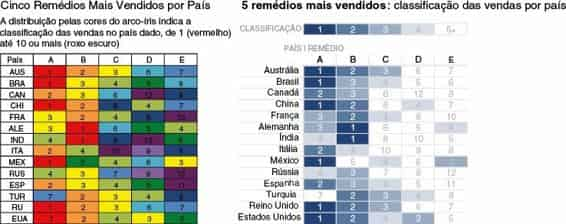
FIGURA 4.15 USE AS CORES MODERADAMENTE
Vamos considerar a Figura 4.15. Imagine que no quadro da esquerda existem diferentes cores, uma para cada número. Para onde vão seus olhos na versão da esquerda? Os meus vagueiam bastante, tentando descobrir em que devo prestar atenção. Meus olhos hesitam no violeta escuro, depois vermelho e, então, azul escuro, provavelmente porque essas cores têm maior saturação do que as outras. No entanto, quando consideramos o que essas cores representam, não é necessariamente onde queremos que nosso público olhe.
Na versão da direita é usada uma saturação variada de uma única cor. Mas você pode usar qualquer cor que preferir, desde que use apenas gradações dessa mesma cor. Note que nossa percepção é mais limitada quando se trata de saturação relativa, mas uma vantagem é que ela carrega algumas suposições quantitativas (mais saturado representa um valor maior do que menos saturado ou vice-versa — algo que você não obtém com as cores do arco-íris usadas originalmente como diferenciadores categóricos). Isso funciona bem para nosso propósito aqui, em que os números baixos (líderes de mercado) são denotados com a saturação de cor mais alta. Somos atraídos primeiro para o azul escuro — os líderes de mercado. Esse é um uso mais cuidadoso de cor.
Existe um teste fácil para determinar se os atributos pré-atentivos estão sendo usados eficientemente. Crie seu visual e, então, feche os olhos ou desvie o olhar por uns instantes. Em seguida, olhe de novo, observando para onde seus olhos são atraídos primeiro. Eles pousam imediatamente onde você deseja que seu público focalize? Melhor ainda, busque a ajuda de um amigo ou colega — peça para ele explicar como processa a apresentação: para onde seus olhos vão primeiro, para onde vão depois disso e assim por diante. Essa é uma boa maneira de ver as coisas através dos olhos de seu público e confirmar se o visual que você criou está chamando a atenção e gerando uma hierarquia visual de informações da maneira desejada.
Uma pergunta feita regularmente em meus workshops é a respeito da novidade. Faz sentido mudar as cores ou os tipos de gráfico para que o público não fique entediado? Minha resposta é um retumbante Não! A história que você está contando deve ser o que mantém a atenção de seu público (vamos falar mais sobre história no Capítulo 7), não o design dos elementos de seus gráficos. Quanto ao tipo de gráfico, você sempre deve usar o que for mais fácil para seu público ler. Ao mostrar informação semelhante que pode ser representada no gráfico da mesma maneira, pode ser vantajoso manter o mesmo layout, pois, basicamente, você treina o público a ler a informação, facilitando a interpretação dos gráficos posteriores e reduzindo a fadiga mental.
Uma mudança nas cores sinaliza exatamente isso — uma mudança. Assim, use isso quando quiser que o público perceba a mudança por algum motivo, mas nunca simplesmente por causa da novidade. Se estiver projetando sua comunicação em tons de cinza e usando uma única cor para chamar a atenção, use esse mesmo esquema em toda a comunicação. Seu público aprende rapidamente que azul, por exemplo, sinaliza onde deve olhar primeiro, e pode usar esse entendimento ao processar os slides ou visuais subsequentes. Contudo, se quiser sinalizar uma clara mudança no tópico ou no tom, uma alteração na cor é um modo de reforçar isso visualmente.
Existem alguns casos nos quais o uso de cor deve ser uniforme. Seu público normalmente vai se familiarizar com o que as cores significam e, então, vai presumir que os mesmos detalhes se aplicam a todo o restante da comunicação. Por exemplo, se você estiver exibindo dados em quatro regiões de um gráfico, cada uma com sua própria cor em um lugar dentro de sua apresentação ou relatório, preserve esse mesmo esquema em todos os visuais no restante da apresentação ou do relatório (e, se possível, evite o uso das mesmas cores para outros propósitos). Não confunda seu público alterando o uso da cor.
Aproximadamente 8% dos homens (incluindo meu marido e um antigo chefe) e metade disso de mulheres são daltônicos. Frequentemente, isso se manifesta como a dificuldade de distinguir entre tons vermelho e verde. De modo geral, você não deve usar tons vermelhos e verdes. Às vezes, contudo, há uma conotação útil com o uso de vermelho e verde: vermelho para denotar uma perda de dois dígitos para a qual você quer chamar a atenção ou o verde para destacar crescimento significativo. Você ainda pode aproveitar isso, mas certifique-se de ter algum indício visual adicional para diferenciar os números importantes, a fim de não prejudicar parte de seu público. Pense também em usar negrito, saturação ou brilho variado, ou em adicionar um simples sinal de mais ou menos em frente aos números para garantir que se destaquem.
Quando estou projetando um visual e selecionando cores para realçar aspectos positivos e negativos, frequentemente uso azul para sinalizar positivo e laranja para negativo. Acho que as associações positivas e negativas com essas cores podem ser reconhecidas e evito o desafio do daltonismo descrito. Ao se deparar com essa situação, considere se é preciso destacar as duas extremidades da escala (positivo e negativo) com cor ou se chamar a atenção para uma ou para outra (ou sequencialmente, uma e depois a outra) pode funcionar para contar sua história.
Existem vários sites e aplicativos com simuladores de daltonismo que permitem ver como sua apresentação fica para daltônicos. Por exemplo, o Vischeck (vischeck.com - conteúdo em inglês) permite carregar imagens ou baixar a ferramenta para usar em seu computador. O Color Oracle (colororacle.org - conteúdo em inglês) oferece download gratuito para Windows, Linux ou Mac, que aplica um filtro de cor na tela inteira, independente do software em uso. O CheckMyColours (checkmycolours.com - conteúdo em inglês) é uma ferramenta para verificar cores de primeiro e segundo plano e determinar se elas oferecem contraste suficiente quando vistas por um daltônico.
A cor desperta emoção. Considere o tom que deseja estabelecer em sua visualização de dados ou comunicação mais ampla e escolha uma cor (ou mais) que ajude a reforçar a emoção que deseja despertar em seu público. O assunto é sério ou alegre? Você está fazendo uma declaração ousada e notável e quer que a cor a ecoe ou uma abordagem mais circunspecta, com um esquema de cores obscuras, é adequada?
Vamos discutir dois exemplos específicos de cor e tom. Certa vez, um cliente me disse que as apresentações que eu tinha feito pareciam “legais demais” (assim, amistosamente). Eu havia criado esses visuais em minha paleta de cores típica: tons de cinza com azul médio usado moderadamente para chamar a atenção. Eles relatavam os resultados de uma análise estatística e foram usados para (e exigiam) uma aparência mais clínica. Levando isso em conta, retoquei os visuais a fim de usar preto para chamar a atenção. Troquei também parte do texto do título para maiúsculas e mudei a fonte de tudo (vamos discutir fontes com mais detalhes no Capítulo 5, no contexto do design).
As apresentações finais, embora basicamente as mesmas, tinham uma aparência completamente diferente, graças a essas alterações simples. Como acontece com muitas outras decisões que tomo ao comunicar dados, o público (nesse caso, meu cliente) deve ser o mais importante e suas necessidades e desejos devem ser considerados ao se fazer escolhas de design como essas.
Ao escolher cores de comunicações para públicos internacionais, pode ser importante considerar as conotações que elas têm em outras culturas. David McCandless criou uma visualização mostrando cores e o que significam em diferentes culturas, o que pode ser encontrado em seu livro The Visual Miscellaneum: A Colorful Guide to the World’s Most Consequential Trivia, sem tradução no Brasil, (2012) ou em seu site, em informationisbeautiful.net/visualizations/colours-in-cultures, conteúdo em inglês.
Como outro exemplo de cor e tom, lembro-me de estar folheando uma revista de aviação em uma viagem de ônibus e encontrar um artigo fofinho sobre encontros online, acompanhado por gráficos representando dados relacionados. Os gráficos eram quase inteiramente rosa-choque e azul-esverdeado. Você escolheria esse esquema de cores para seu relatório comercial trimestral? Certamente, não. Mas dada a natureza e o tom animado do artigo, esses visuais acompanhados de cores vívidas funcionaram (e chamaram minha atenção!).
Algumas empresas passam pelo enorme trabalho de criar sua marca e a paleta de cores associada. Podem ser cores de marca com que você é obrigado a trabalhar ou que façam sentido aproveitar. O segredo do sucesso, nesse caso, é identificar uma ou talvez duas cores de marca para usar como se fossem placas escritas “olhe aqui” e manter o restante de sua paleta de cores relativamente obscura, com tons de cinza ou preto.
Em alguns casos, pode fazer sentido afastar-se totalmente das cores de marca.
Por exemplo, uma vez eu estava trabalhando com um cliente cuja cor de marca era um tom verde claro. No início, eu queria usar esse verde como cor de destaque, mas ele simplesmente não chamava a atenção o suficiente. Não havia contraste suficiente, de modo que as apresentações que eu criava tinham uma aparência desbotada. Quando isso acontece, você pode usar preto para chamar a atenção, quando tudo mais estiver em tons de cinza, ou escolher uma cor totalmente diferente — apenas certifique-se de que ela não entre em conflito com as cores de marca, caso precisem ser mostradas juntas (por exemplo, se o logotipo da marca vai estar em cada página da pilha de slides que você está construindo). Nesse caso em particular, o cliente escolheu a versão em que usei uma cor totalmente diferente. Um exemplo de cada uma das estratégias aparece na Figura 4.16.
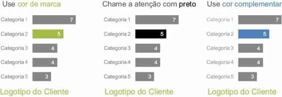
FIGURA 4.16 OPÇÕES DE COR COM CORES DE MARCA
Resumindo: pense bem no uso das cores!
Sem outras pistas, a maior parte de seu público vai começar na parte superior esquerda de seu gráfico ou slide e percorrer com os olhos em movimentos de zigue-zague pela tela ou página. Eles veem a parte superior da página primeiro, o que a transforma em um local precioso. Pense em colocar o que for mais importante ali (veja a Figura 4.17).
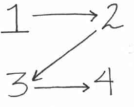
FIGURA 4.17 O “Z” EM ZIGUE-ZAGUE PARA ABSORVER INFORMAÇÃO EM UMA TELA OU PÁGINA
Se algo é importante, tente não fazer com que seu público olhe em outro material para entender isso. Elimine esse trabalho, colocando o que é importante no topo. Em um slide, podem ser palavras (a principal informação ou chamada para ação). Em uma visualização de dados, pense sobre quais dados você quer que o público veja primeiro e se faz sentido reorganizar o visual de forma correspondente (isso não acontecerá sempre, mas é uma ferramenta que você tem à disposição para sinalizar importância para seu público).
Tenha como objetivo trabalhar dentro do modo como seu público absorve informação, não contra ele. Eis um exemplo de como pedir ao público para que trabalhe contra seu modo natural: vi uma vez o diagrama de fluxo de um processo que começava na parte inferior direita e era preciso lê-lo de baixo para cima e para a esquerda. Isso era muito desconfortável (sentimentos de desconforto devem ser evitados em nosso público!). Tudo que eu queria era ler de cima à esquerda para baixo à direita, independente dos outros indícios visuais presentes para tentar me estimular a fazer o oposto. Outro exemplo que às vezes vejo em visualização de dados é algo representado em uma escala que varia do negativo para o positivo, em que os valores positivos estão à esquerda (normalmente associada ao negativo) e os valores negativos à direita (mais naturalmente associada ao positivo). Novamente, neste exemplo, a informação está organizada de um modo que vai contra a maneira que o público quer absorvê-la, causando o desafio visual de decifrar. Vamos ver um exemplo específico relacionado a isso no estudo de caso 3, no Capítulo 9.
Esteja atento a como posicionar elementos em uma página e faça isso de um modo que pareça natural para seu público absorver.
Os atributos pré-atentivos são ferramentas poderosas quando usados moderada e estrategicamente na comunicação visual. Sem outras pistas, nosso público precisa processar toda informação que colocamos em sua frente. Facilite isso, usando atributos pré-atentivos, como tamanho, cor e posição na página, para sinalizar o que é importante. Use esses atributos estratégicos para chamar a atenção para onde você deseja que seu público olhe e para criar uma hierarquia visual que ajude a conduzi-lo pelo visual da maneira que você deseja. Avalie a eficácia dos atributos pré-atentivos em sua apresentação, aplicando o teste do “para onde seus olhos são atraídos?”.
Com isso, considere sua quarta lição aprendida. Agora você sabe como levar a atenção de seu público para onde você deseja.